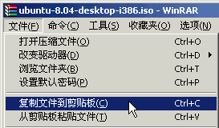

Ubuntu安装基础教程
作者：TeliuTe 来源：基础教程网
硬盘安装 Ubuntu 返回目录 下一课1、复制引导文件
1）下载 Ubuntu 的 desktop 光盘镜像iso文件，如 ubuntu-10.10-desktop-i386.iso：http://mirrors.sohu.com/ubuntu-releases/10.10/
2）双击下载的ISO镜像文件，用 WinRAR 或 7-zip 打开它，如果打不开，就先打开WinRAR程序窗口，再把下载的ISO镜像文件拖到WinRAR窗口中；
其他下载地址：
http://mirrors.163.com/ubuntu-releases/
http://mirrors.sohu.com/ubuntu-releases/
http://cn.archive.ubuntu.com/ubuntu-releases/
http://ubuntu.srt.cn/ubuntu-releases/
http://tw.archive.ubuntu.com/ubuntu-releases/
http://mirror.switch.ch/ftp/ubuntu-cdimage/
http://ftp.heanet.ie/mirrors/ubuntu-cdimage/
http://ftp.kddlabs.co.jp/020/Linux/packages/ubuntu/releases-cd/
教育网用户：http://ftp.sjtu.edu.cn/ubuntu-cd/
其他下载地址可以在Ubuntu中文论坛里搜索一下：http://forum.ubuntu.org.cn/viewforum.php?f=77
3）在窗口中找到上面的casper文件夹，双击打开这个文件夹，里面有一个in打头和vm打头的文件，
这两个initrd.lz和vmlinuz就是系统引导文件，需要把他们解压出来，放到第一个分区中；
4）单击选中initrd.lz文件，然后点菜单“文件－复制文件到剪贴板”，按Ctrl＋C组合键也行；

5）在“我的电脑”图标上点右键，选择“资源管理器”命令，然后在左边找到C:盘，瞄准点右键选“粘贴”命令，把initrd.lz粘贴到C:盘里头，

同样把vmlinuz文件也复制到C:盘里头，关闭 WrinRAR窗口，把这个ISO镜像文件也复制到C:盘里头去；
2、制作menu.lst文件
1）打开记事本，输入下面的内容，也可以复制粘贴进去，把第三行中文件名改成对应的，本课文件夹中有这个menu.lst文件；
2）点菜单“文件－保存”，位置保存在C:盘，文件名输入 "menu.lst" ，注意有一对英文的双引号；

3）再下载一个grldr文件：http://code.google.com/p/grub4dos-chenall/downloads/list，也复制到C:盘中，本课的文件夹里有这个grldr，
这样在C:盘里面就有5个复制过来的文件了，仔细检查一下；
3、修改WinXP的启动文件boot.ini
1）WinXP的启动配置文件，是一个boot.ini文件，打开这个文件，修改里面的timeout=0，把0改成3，添加下面这句即可：（本课有个boot.ini范例）
2）关于修改boot.ini的详细操作，请参看：http://teliute.org/win/TeComput/lesson33/lesson33.html
3）重新启动计算机，在出现启动菜单时，按方向键选择“Install Ubuntu”，按回车键进入后开始安装；
本节学习了硬盘安装 Ubuntu 的基本方法，如果你成功地完成了练习，请继续学习下一课内容；
本教程由86团学校TeliuTe制作|著作权所有
基础教程网：http://teliute.org/
美丽的校园……
|
|
|
|
|
|
转载和引用本站内容，请保留作者和本站链接。